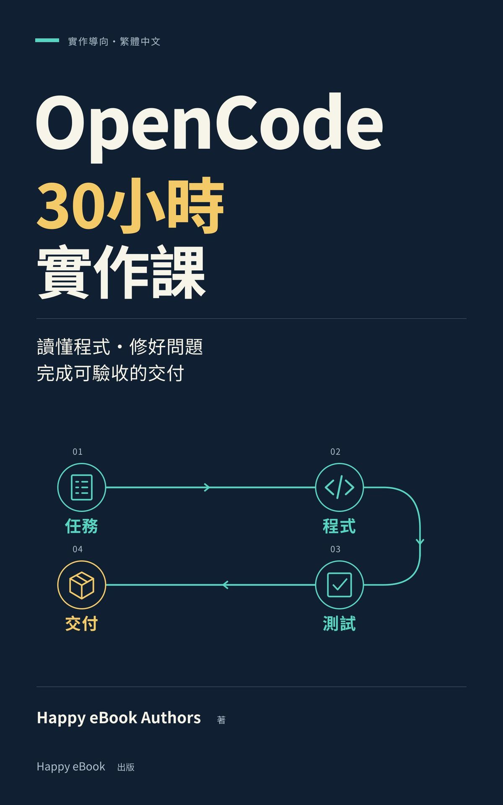

電子書
OpenCode 30小時實作課
AI很快就能給出一份程式

OpenCode 30小時實作課
AI很快就能給出一份程式
AI很快就能給出一份程式。真正的工作，是確認它讀對資料、沒有覆寫原檔，也能讓別人照著說明使用。 《OpenCode 30小時實作課》以一份範例書目為起點，帶你把「請AI幫忙」變成可檢查的工作：先說清楚需求與界線，再讀程式、看工具事件、寫測試，最後完成可交接的成果。 【一條專題主線，三段學習路線】 • 基礎操作與安全驗證：練習受控讀寫、任務契約、必要的Python，以及Git與權限保護。 • 規則、測試與專案接手：留下專案規則，接手教材提供的完整書目工具，追蹤資料流，以紅綠測試、CSV邊界案例與批次檢查驗證判斷。 • 修改、重用與交付：在同一個工作副本完成限定改動，把審查做成可重用命令，再整理操作手冊與工具包，進行收件者驗收。 【不只看AI回答，也看原碼與證據】 你將練習先寫預期，再核對檔案差異、測試結果與工具事件。遇到模型答錯，以原碼或測試反證，而不是為了配合回答修改正確資料。 【適合這樣的你】 已會建立資料夾、編輯純文字與使用基本終端機，願意讀一點程式，但不必事先熟悉OpenCode。主線使用WSL／Linux的Bash，只介紹專題需要的Python與Git；本書不是完全零基礎的電腦入門書。